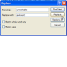
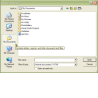
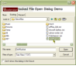
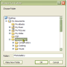
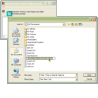

High Resolution Multimedia Timer
High Resolution Multimedia Timer
 Subclassing and Hooking with Machine Code Thunks
Subclassing and Hooking with Machine Code Thunks

Common Dialogs Index
|  | Using the Find and Replace Common DialogsVB has never provided direct support for the Find/Replace common dialogs. This may have been because these dialogs are non-modal, and it is more difficult to use these from an ActiveX control container, or that it is fairly simple to knock up your own Find/Replace form in VB without bothering with the ones provided by Windows. In any case, this sample provides a simple class and a module which enable you to use the dialogs direct from VB, although there is problem with Tab key handling in the dialogs. Last Updated: 20 June 2003 |
|  | CommonDialog/DirectCommon Dialog/Direct is a new DLL or class library which shows how to completely replace COMDLG32.OCX through Visual Basic code. The main advantage of this is you no longer need to put a control on a form to use common dialogs - just declare an instance of the class and you have a straight replacement. You can also incorporate the Common Dialog/Direct code straight into your own project if you want to reduce dependency files when you ship your project. Last Updated: 20 June 2003 |
Common Dialog Templates - Create a WinZip Style File Add DialogThis sample, from Cayce Cochran (cayce@fastlane.net), demonstrates how to use a dialog template with a File Open or Save CommonDialog. It takes advantage of the CommonDialog/Direct DLL component which now (versions dated 1 November 1999 and higher) includes the relevant support for templates. Last Updated: 19 December 2002 | |
|  | Common Dialog Hooks - Create a VB Style Open Project DialogThis sample, completely rewritten from an original sample at this site by Mark Grimes (kapag@tir.com), demonstrates how to create a full VB-style Open project dialog by taking advantage of the Hook support provided in the CommonDialog/Direct DLL component. Last Updated: 19 December 2002 |
|  | Browsing For FoldersThe Folder Browse Dialog is the missing dialog in VB - it can't be called from a run-time function and it is missing from the Common Dialog OCX as well. Whilst a number of code samples demonstrate that calling this dialog is simple, many ignore the most important feature: the ability to initialise the folder browse dialog to the user's previously selected folder or to some default. This librbary also offers the ability to capture the Browse for Folder dialog into your own VB form and respond to browse events such as folder change. Last Updated: 16 December 2002 |
|  | Two code only solutions for displaying Common/DialogsThe Common Dialog/Direct component provides you with a more functional version of the Common Dialog control which also means you no longer need a form to create Common Dialogs. These samples show how you can go one further with your app and remove the need to ship any DLLs at all! Last Updated: 21 March 2000 |